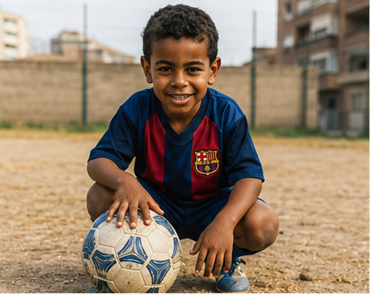
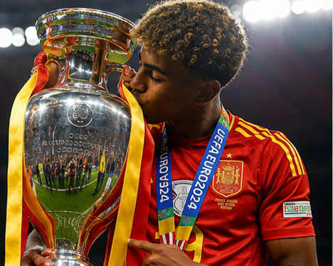
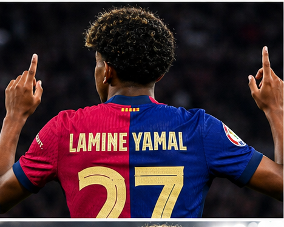
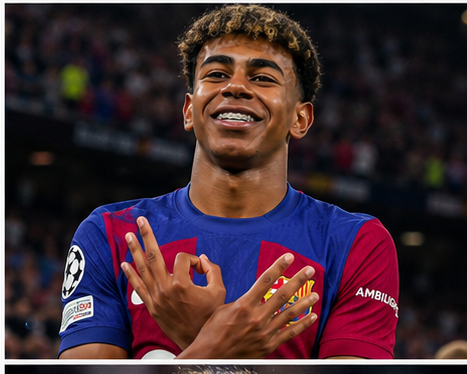
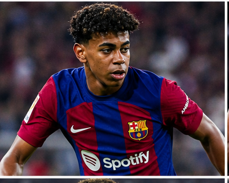

Lamine Yamal is one of football's most exciting young talents. Blessed with exceptional dribbling, creativity, and confidence beyond his years, the Spanish winger has already become a key player for both FC Barcelona and the Spanish national team. His rapid rise from La Masia to the world's biggest stages has made him one of the brightest stars of the next generation.

Lamine Yamal Nasraoui Ebana was born on 13 July 2007 in Esplugues de Llobregat, Spain, and grew up in Mataró near Barcelona. From a very young age, his extraordinary football talent stood out. He joined FC Barcelona's famous La Masia academy as a child, where he quickly gained recognition as one of the club's brightest prospects.

Yamal entered Barcelona's renowned La Masia academy at the age of seven. His technical ability, vision, close ball control, and maturity impressed coaches at every level. He consistently played above his age group and developed into one of the most promising young players in world football.

Lamine Yamal made his first-team debut for FC Barcelona in April 2023 at just 15 years old, becoming one of the youngest players ever to appear for the club. His fearless performances and natural talent quickly earned him regular opportunities with the senior team.

Since breaking into Barcelona's first team, Yamal has become one of the club's most important young players. His pace, creativity, dribbling, and ability to create chances have made him a key part of Barcelona's attack. Despite his young age, he continues to break records and establish himself among Europe's best young footballers.

Yamal made his senior debut for Spain in 2023 and immediately made history by becoming the youngest player and youngest goal scorer for the national team. He played a major role in Spain's triumph at UEFA Euro 2024, earning widespread praise for his performances throughout the tournament.
Lamine Yamal is known for his exceptional dribbling, quick feet, creativity, vision, and composure. Operating mainly as a right winger, he enjoys taking on defenders, delivering precise passes, and scoring important goals. His football intelligence and confidence make him one of the most exciting young players in the game.
Although still at the beginning of his career, Lamine Yamal has already shown the qualities needed to become one of football's future superstars. His confidence, skill, maturity, and record-breaking achievements have made him an inspiration to young players around the world. Fans and experts believe he has the potential to become one of the greatest footballers of his generation.
"I just want to enjoy football, keep learning, and help my team win." — Lamine Yamal